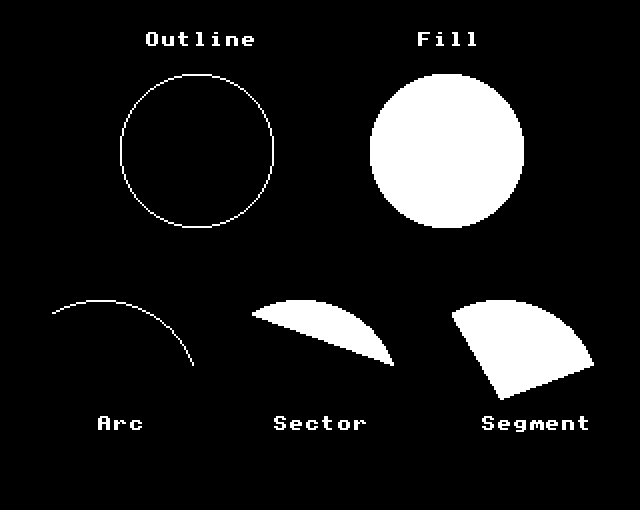
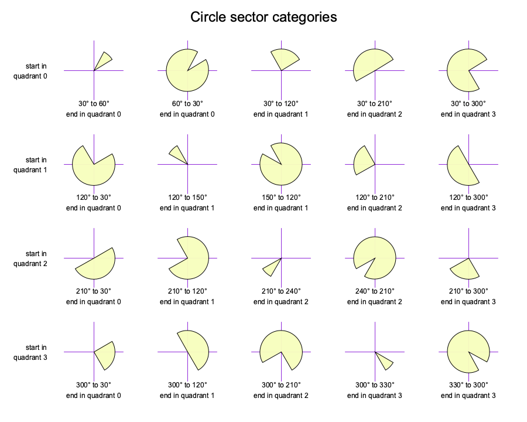

Outline; Filled; Arc; Sector; Segment - 2094 bytes (12.7%)
- §1. Types of circle routines available
- §2. Plot the outline of a circle
- §3. Plot a filled circle
- §4. Get the circle radius squared
- §5. Initialise circle plotting variables
- §6. Moves coordinates onto the next pixel around the circle
- §7. Plot an arc of a circle
- §8. Plot a sector of a circle
- §9. Plot a segment of a circle
- §10. reflectCirclePointXAboutCircleCentre
- §11. addCirclePointYToCircleCentre
- §12. Set left and right points Y coordinate to be reflected below the centre row of the circle
- §13. Square a 16 bit number
- §14. Initialise variables for drawing a segment
- §15. Initialise segment when chord crosses centre row
- §17. circleDoLineAndQuadrantInitialisation
- §18. Get the quadrant of the line's direction
- §19. Circle arc / sector / segment quadrant preparation
- §20. Circle arc / sector / segment quadrant preparation
- §21. startTrackingChordWithCorrectQuadrantData
- §22. We have reached the start of the chord
- §23. Updates tracking the position along the current line
- §24. Update the line until we reach a new row, then move to that new row
- §25. When drawing a circle segment, update the position along the chord
- §26. trackingChordLineHorizontally
§1. Types of circle routines available.

§2. Plot the outline of a circle.
The circle is specified by two points, the centre point and a point on the radius. On Entry: .vduGraphicsCursorPixelsXLow: centre point [4 bytes] .vdu25ParameterXLow: point on radius [4 bytes]
.plotCircleOutline = $9044 Copy the centre of the circle point to the old graphics position LDX #.vduGraphicsCursorPixelsXLow - .vduVariablesStart source (centre of circle) LDY #.vduOldGraphicsCursorPixelsXLow - .vduVariablesStart destination (old graphics point) JSR .copyFourBytesWithinVDUVariables copy current graphics cursor position to old graphics cursor position i.e. copy the centre of the circle Get radius squared LDY #.vduOldGraphicsCursorPixelsXLow - .vduVariablesStart centre of circle LDX #.vdu25ParameterXLow - .vduVariablesStart plot position JSR .getCircleRadiusSquared Initialise circle variables JSR .circleInitialisation Loop to draw the circle Each time around the loop we move to the next pixel around the first quadrant of the circle and we reflect to draw the other quadrants .circleOutlineLoop = $9055 Add the centre point to get the right hand side point on the circle, then reflect about the centre Y axis to get the left side point on the circle. i.e.: .circlePointRight = (centreX + pointX, centreY + pointY) .circlePointLeft = (centreX - pointX, centreY + pointY) JSR .reflectCirclePointXAboutCircleCentre Set X coordinates JSR .addCirclePointYToCircleCentre Set Y coordinates Plot four points symmetrically about the centre of the circle Plot right point (quadrant 0) LDX #.circlePointRightXLow - .vduVariablesStart JSR .plotPointXInternal plot point .circlePointRight Don't draw the left point if exactly on the horizontal centre line (since it would be the same as the right point already drawn) LDA .circlePointXLow ORA .circlePointXHigh BEQ + if (circle X is zero) then branch (skip forward) Plot left point (quadrant 1) LDX #.circlePointLeftXLow - .vduVariablesStart JSR .plotPointXInternal plot point .circlePointLeft + Don't reflect below the centre row if exactly on the centre row LDA .circlePointYLow ORA .circlePointYHigh BEQ .circleOutlineNext if (circle point Y is zero) then branch (skip forward) JSR .reflectPointVerticallyAboutCircleCentre reflect points .circlePointLeft and .circlePointRight vertically about the centre Plot right point (quadrant 3) LDX #.circlePointRightXLow - .vduVariablesStart JSR .plotPointXInternal plot point .circlePointRight Don't reflect if on the horizontal centre line LDA .circlePointXLow ORA .circlePointXHigh BEQ .circleOutlineNext if (circle X is zero) then branch (skip forward) Plot left point (quadrant 2) LDX #.circlePointLeftXLow - .vduVariablesStart JSR .plotPointXInternal plot point .circlePointLeft .circleOutlineNext = $908a JSR .circleIncrement move to next pixel LDA .circlePointXHigh BPL .circleOutlineLoop if (circle point X >= 0) then branch (loop back) JMP .setGraphicsCursorPositionAndFinishPLOT
The circle is specified by two points, the centre point and a point on the radius. On Entry: .vduGraphicsCursorPixelsXLow: centre point [4 bytes] .vdu25ParameterXLow: point on radius [4 bytes]
.plotCircleFilled = $9095 Copy centre of circle to old graphics cursor position LDX #.vduGraphicsCursorPixelsXLow - .vduVariablesStart source LDY #.vduOldGraphicsCursorPixelsXLow - .vduVariablesStart destination JSR .copyFourBytesWithinVDUVariables Get radius squared LDY #.vduOldGraphicsCursorPixelsXLow - .vduVariablesStart LDX #.vdu25ParameterXLow - .vduVariablesStart JSR .getCircleRadiusSquared Initialise circle variables JSR .circleInitialisation Loop to draw the circle Each time around the loop we move to the next row of the circle moving from the centre row upwards to the top, reflecting each time to draw the rows below the centre. .circleFilledLoop = $90a6 Add the centre point to get the right hand side point on the circle, then reflect about the centre Y axis to get the left side point on the circle. i.e.: .circlePointRight = (centreX + pointX, centreY + pointY) .circlePointLeft = (centreX - pointX, centreY + pointY) JSR .reflectCirclePointXAboutCircleCentre Set X coordinates JSR .addCirclePointYToCircleCentre Set Y coordinates draw row in upper half of circle LDY #.circlePointRightXLow - .vduVariablesStart LDX #.circlePointLeftXLow - .vduVariablesStart JSR .setMasksAndFillRow if we are on the centre row, skip forward LDA .circlePointYLow ORA .circlePointYHigh BEQ + Reflect points below the centre JSR .reflectPointVerticallyAboutCircleCentre reflect points vertically about the centre this gives us the points in the remaining two quadrants draw row in lower half of circle LDY #.circlePointRightXLow - .vduVariablesStart LDX #.circlePointLeftXLow - .vduVariablesStart JSR .setMasksAndFillRow + Increment the circle point until we reach a new row, then loop back to .circleFilledLoop LDA #0 STA .circleFillRowFlag flag to tell us when we reach a new row .circleRowLoop = $90ca JSR .circleIncrement move to next pixel around circle LDA .circlePointXHigh } BMI .finishedCircleFilled } if (finished) then branch LDA .circleFillRowFlag } BEQ .circleRowLoop } if (not on new row yet) loop back BNE .circleFilledLoop ALWAYS branch (loop back) .finishedCircleFilled = $90d9 JMP .setGraphicsCursorPositionAndFinishPLOT
§4. Get the circle radius squared.
By calculating deltaX^2 + deltaY^2 we get the radius squared. On Entry: X: the vdu variables offset to the centre point of the circle Y: the vdu variables offset to a point on the circumference of the circle On Exit: .circleRadiusSquared and .gxrTemp4567: radius squared, i.e.: (deltaX^2) + (deltaY^2)
.getCircleRadiusSquared = $90dc STX .vduTempStoreDE remember initial X STY .vduTempStoreDF remember initial Y .gxrTemp12 = delta X SEC } LDA .vduVariablesStart,X } SBC .vduVariablesStart,Y } STA .gxrTemp1 } .gxrTemp12 = point[X].X - } point[Y].X LDA .vduVariablesStart + 1,X } = width (signed value) SBC .vduVariablesStart + 1,Y } STA .gxrTemp2 } Compensate for double width pixels (MODE 2,5) LDX .vduCurrentScreenMODE LDA .pixelShapeForMODE,X STA .circlePixelShapeForCurrentMODE store pixel shape based on MODE AND #1 BEQ + if (not double width pixels) then branch to handle double width pixels (MODE 2,5), we double delta X, and deal with the consequences in the update routine (see .circleIncrement) ASL .gxrTemp1 } ROL .gxrTemp2 } multiply X coordinate by two to } compensate + Square delta X JSR .square12_into4567 square width in .gxrTemp12 to .gxrTemp4567 .circleRadiusSquared = .gxrTemp4567 LDX #3 loop counter - LDA .gxrTemp4,X STA .circleRadiusSquaredLow,X DEX BPL - LDX .vduTempStoreDE } recall initial X, Y variables LDY .vduTempStoreDF } .gxrTemp12 = delta Y SEC } LDA .vduVariablesStart + 2,X } SBC .vduVariablesStart + 2,Y } STA .gxrTemp1 } .gxrTemp12 = point[X].Y - } point[Y].Y LDA .vduVariablesStart + 3,X } = height (signed value) SBC .vduVariablesStart + 3,Y } STA .gxrTemp2 } Compensate for half width pixels (MODE 0) LDA .circlePixelShapeForCurrentMODE get pixel shape based on MODE AND #2 BEQ + if (not half width pixels) then branch to handle half width pixels (MODE 0), we double the delta Y, and deal with the consequences in the update routine (see .circleIncrement) ASL .gxrTemp1 } ROL .gxrTemp2 } multiply Y coordinate by two to } compensate + Square delta Y JSR .square12_into4567 square height in .gxrTemp12 into .gxrTemp4567 .circleRadiusSquaredLow += .gxrTemp4567 i.e. .circleRadiusSquaredLow = (deltaX^2) + (deltaY^2) .sqrtNumber0 = .circleRadiusSquaredLow CLC LDX #$FC loop counter ($FC,$FD,$FE,$FF) - LDA .circleRadiusSquaredLow - $FC,X .circleRadiusSquared += .gxrTemp4567 ADC .sqrtNumber0 - $FC,X STA .circleRadiusSquaredLow - $FC,X STA .sqrtNumber0 - $FC,X .sqrtNumber0123 = .circleRadiusSquared INX increment loop counter BMI - if (not done) then branch (loop back) RTS
§5. Initialise circle plotting variables.
Gets the initial point on the circle (along the positive X-axis, quadrant 0), and initialises other variables to help in moving from point to point around the circle. Given the square of the radius 'square_r', we take the integer square root to get an integer value for the radius: floor_r = floor(sqrtf(square_r)). Because the square root function rounds down using the floor function, we ideally want to get closer to a proper rounded value: round(sqrtf(square_r)). i.e. we want something closer to: float float_r = sqrtf(square_r) float f = float_r+0.5 int ideal_radius = floor(f) We first calculate the regular integer square root to get floor_r = floor(sqrtf(square_r)), but then want to get closer to f. Note that f = (float_r+0.5) and: f^2 = (float_r+0.5)^2 = float_r^2 + float_r + 0.25 We already know square_r = float_r^2. We approximate floor_r ~= (float_r + 0.25) So we calculate 'square_r + floor_r' and then take the integer square root, to get a closer approximation to the ideal_radius = floor(f). One of the other variables is the decision variable (.circleDecision). This tracks how close we are to the ideal circle radius by tracking the difference between our desired radius squared and the current radius squared. On Entry: .circleRadiusSquared: radius squared [4 bytes] .sqrtNumber0123: radius squared [4 bytes] On Exit: .circlePointX: radius } initial point on circle along X axis = (radius,0) .circlePointY: 0 } .circleDiameterCountdown: diameter-1 (counts down in steps of 2) .circleCountOddNumbers: 1 (counts up in steps of 2) .circlePixelShapeCurrentOffset: 3 (accounting for pixel shape) .circleDecision: desired radius squared - current radius squared
.circleInitialisation = $914e radius = sqrt(radius squared) JSR .sqrt32 .gxrTemp12 = sqrt(.gxrTemp4567) .circleRadiusSquared += .gxrTemp12 (i.e. .circleRadiusSquaredLow = radius^2 + radius) .sqrtNumber0123 = .circleRadiusSquared CLC } LDA .gxrTemp1 } ADC .circleRadiusSquaredLow } STA .circleRadiusSquaredLow } STA .sqrtNumber0 } LDA .gxrTemp2 } .circleRadiusSquared +=.gxrTemp12 ADC .circleRadiusSquaredMid1 } STA .circleRadiusSquaredMid1 } .sqrtNumber0123 = } .circleRadiusSquared STA .sqrtNumber1 } LDA #0 } ADC .circleRadiusSquaredMid2 } STA .circleRadiusSquaredMid2 } STA .sqrtNumber2 } LDA #0 } ADC .circleRadiusSquaredHigh } STA .circleRadiusSquaredHigh } STA .sqrtNumber3 } .sqrtResult01 = sqrt(.sqrtNumber0123) i.e. sqrt(radius^2 + radius) JSR .sqrt32 .gxrTemp12 = sqrt(.gxrTemp4567) .circlePointX = .sqrtResult01 .circleDiameterCountdown = 2*.circlePointX - 1 LDA .sqrtResult0 } STA .circlePointXLow } .circlePointX = .sqrtResult0 ASL } STA .circleDiameterCountdownLow } .circleDiameterCountdown = twice X } point LDA .sqrtResult1 } STA .circlePointXHigh } ROL } STA .circleDiameterCountdownHigh } LDA .circleDiameterCountdownLow } BNE + } .circleDiameterCountdown-- DEC .circleDiameterCountdownHigh } + } DEC .circleDiameterCountdownLow } Now we have our actual radius we are going to draw, we square it to get the actual radius squared JSR .square12_into4567 .gxrTemp4567 = .sqrtResult01 * .sqrtResult01 .circleDecision = .circleRadiusSquared - .gxrTemp45 = (radius^2 + radius) - (actual radius)^2 SEC } LDA .circleRadiusSquaredLow } SBC .gxrTemp4 } STA .circleDecisionLow } .circleDecision = } .circleRadiusSquared - .gxrTemp45 LDA .circleRadiusSquaredMid1 } SBC .gxrTemp5 } STA .circleDecisionHigh } .circlePointY = 0 LDA #0 STA .circlePointYHigh STA .circlePointYLow .circleCountOddNumbers = 1 STA .circleCountOddNumbersHigh LDA #1 STA .circleCountOddNumbersLow .circlePixelShapeCurrentOffset = 3 LDA #3 STA .circlePixelShapeCurrentOffset Scale X based on pixel shape LDA .circlePixelShapeForCurrentMODE get pixel shape based on MODE AND #1 BEQ + if (not double width) then branch LSR .circlePointXHigh divide width by two ROR .circlePointXLow + RTS
§6. Moves coordinates onto the next pixel around the circle.
Update the point 'circlePoint' to be the next pixel around the circle anticlockwise from the positive x-axis (in quadrant 0). Uses something akin to Bresenham's Circle Algorithm. circlePixelShapeCurrentOffset = pixel shape for current MODE repeat: if circleDecision < circleCountOddNumbers: circleDecision += circleDiameterCountdown circleDiameterCountdown -= 2 circlePixelShapeCurrentOffset = circlePixelShapeCurrentOffset EOR 1 if (circlePixelShapeCurrentOffset AND 1) { circlePointX-- } if (circleDecision < circleCountOddNumbers) then goto "circle_continues" circleDecision -= circleCountOddNumbers circleCountOddNumbers += 2 circlePixelShapeCurrentOffset = circlePixelShapeCurrentOffset EOR 2 if circlePixelShapeCurrentOffset AND 2: circleFillRowFlag = 1 (start of new row) circlePointY++ "circle_continues" until (circlePixelShapeCurrentOffset != 0)
.circleIncrement = $91db The shape of pixels can be double width or half width (compared to MODE 1) LDA .circlePixelShapeCurrentOffset } .circlePixelShapeCurrentOffset &= AND .circlePixelShapeForCurrentMODE } pixel shape based on MODE STA .circlePixelShapeCurrentOffset } .circleIncrementInternal = $91e4 SEC } LDA .circleDecisionLow } SBC .circleCountOddNumbersLow } X = .circleDecision - TAX } .circleCountOddNumbersLow LDA .circleDecisionHigh SBC .circleCountOddNumbersHigh BPL .incrementY if (.circleDecision >= .circleCountOddNumbers) then branch CLC } LDA .circleDecisionLow } ADC .circleDiameterCountdownLow } STA .circleDecisionLow } .circleDecision += LDA .circleDecisionHigh } .circleDiameterCountdown ADC .circleDiameterCountdownHigh } STA .circleDecisionHigh } SEC } LDA .circleDiameterCountdownLow } SBC #2 } STA .circleDiameterCountdownLow } .circleDiameterCountdown -= 2 BCS + } DEC .circleDiameterCountdownHigh } + Account for double width pixel shape In double width pixel modes (MODE 2, 5) we skip decrementing X every other time to account for the fact we doubled the deltaX coordinate in the setup routine (see .getCircleRadiusSquared) LDA .circlePixelShapeCurrentOffset } EOR #1 } .circlePixelShapeCurrentOffset ^= 1 STA .circlePixelShapeCurrentOffset } AND #1 BEQ .skipMoveLeft LDA .circlePointXLow } BNE + } DEC .circlePointXHigh } .circlePointX-- + } DEC .circlePointXLow } .skipMoveLeft = $922c SEC } LDA .circleDecisionLow } SBC .circleCountOddNumbersLow } X = .circleDecisionLow - TAX } .circleCountOddNumbersLow LDA .circleDecisionHigh } SBC .circleCountOddNumbersHigh } BMI .circleContinues } if (.circleDecision < } .circleCountOddNumbers) then branch .incrementY = $923c STA .circleDecisionHigh } Finish subtraction started earlier: STX .circleDecisionLow } .circleDecision -= } .circleCountOddNumbers CLC } LDA .circleCountOddNumbersLow } ADC #2 } .circleCountOddNumbers += 2 STA .circleCountOddNumbersLow } BCC + } INC .circleCountOddNumbersHigh } + Account for half width pixel shape In half width pixel MODEs (MODE 0) we skip incrementing Y every other time to account for the fact we doubled the deltaY coordinate in the setup routine (see .getCircleRadiusSquared) LDA .circlePixelShapeCurrentOffset } EOR #2 } .circlePixelShapeCurrentOffset ^= 2 STA .circlePixelShapeCurrentOffset } AND #2 BEQ .circleContinues if (bit 2 clear) then branch INC .circleFillRowFlag set the circle fill flag (moving to a new row) INC .circlePointYLow } BNE .circleContinues } INC .circlePointYHigh } .circlePointY++ .circleContinues = $9267 If the pixel shape for the current mode requires we do a second loop then loop back, otherwise finish LDA .circlePixelShapeCurrentOffset BNE .return10 if (done) then branch (return) JMP .circleIncrementInternal loop back .return10 = $926f RTS
KEY: # = chord circle * = arc point defining | / = start line end of arc ---->\ \|/ \ = end line (PLOT parameter) \ ****** \ **** **** leftmost end of-> \####### *** chord \ ######## ** \ ######## <---- start of arc (current graphics cursor pos) \ _/ = rightmost end of chord \ / \ _/ end line \ / start line \ _/ \ / \ _/ \/ <---- centre of circle (old graphics cursor pos)
.plotCircleArc = $9270 LDA #0 } STA .circleChordLine } no chord line to track for an arc JSR .circleDoLineAndQuadrantInitialisation Get radius squared LDY #.vduOldGraphicsCursorPixelsXLow - .vduVariablesStart circle centre LDX #.vduGraphicsCursorPixelsXLow - .vduVariablesStart start point JSR .getCircleRadiusSquared Initialise circle variables JSR .circleInitialisation .plotCircleArcLoop = $9282 Each time around this loop is the next pixel around the circle. We start with the point on the circle to the right on the horizontal centre line and work up anticlockwise, plotting until we reach the top of the quadrant. We reflect as we go to generate the same points in the remaining quadrants. Add the centre point to get the right hand side point on the circle, then reflect about the centre Y axis to get the left side point on the circle. i.e.: .circlePointRight = (centreX + pointX, centreY + pointY) .circlePointLeft = (centreX - pointX, centreY + pointY) JSR .reflectCirclePointXAboutCircleCentre Set X coordinates JSR .addCirclePointYToCircleCentre Set Y coordinates Prepare data for quadrant zero (top right quadrant) LDY #0 JSR .circlePrepareForRightSideQuadrant Prepare data for quadrant one (top left quadrant) LDY #1 JSR .circlePrepareForLeftSideQuadrant Are we the correct side of the chord line? LDX .circleTrackingRightmostChordPoint CPX #.circlePointRightXLow - .vduVariablesStart BNE + if (not the correct side of the chord) then branch Plot right side point (quadrant 0) JSR .plotPointXInternal plot point .circlePointRight + if (on the centre column) then branch (we can't reflect left of the centre, skip forward) LDA .circlePointXLow ORA .circlePointXHigh BEQ + if (X coordinate is zero) then branch Are we the correct side of the chord line? LDX .circleTrackingLeftmostChordPoint CPX #.circlePointLeftXLow - .vduVariablesStart BNE + if (not the correct side of the chord) then branch Plot left side point (quadrant 1) JSR .plotPointXInternal plot point .circlePointLeft + if (on the centre row) then branch (we can't reflect below the line, skip forward) LDA .circlePointYLow ORA .circlePointYHigh BEQ .nextCirclePoint if (Y coordinate is zero) then branch Draw below the centre row JSR .reflectPointVerticallyAboutCircleCentre reflect points .circlePointLeft, .circlePointRight vertically below the centre row Prepare data for quadrant three (bottom right quadrant) LDY #3 JSR .circlePrepareForRightSideQuadrant Prepare data for quadrant two (bottom left quadrant) LDY #2 JSR .circlePrepareForLeftSideQuadrant Are we the correct side of the chord line? LDX .circleTrackingRightmostChordPoint CPX #.circlePointRightXLow - .vduVariablesStart BNE + if (not the correct side of chord line) then branch Plot right point (quadrant 2) JSR .plotPointXInternal plot right point + if (on centre column) then branch (we can't reflect left of the line, skip forward) LDA .circlePointXLow ORA .circlePointXHigh BEQ .nextCirclePoint if (X coordinate on centre column) then branch Are we the correct side of the chord line? LDX .circleTrackingLeftmostChordPoint CPX #.circlePointLeftXLow - .vduVariablesStart BNE .nextCirclePoint if (not the correct side of the chord) then branch Plot left point (quadrant 3) JSR .plotPointXInternal plot left point .nextCirclePoint = $92df JSR .circleIncrement move to next point LDA .circlePointXHigh BPL .plotCircleArcLoop loop back if not done JMP .setGraphicsCursorPositionAndFinishPLOT finally move graphics cursor
§8. Plot a sector of a circle.
KEY: * = sector / = start line \ = end line end of arc ----> \ ****** (PLOT parameter) \ ************** \******************** \********************* \********************* <---- start of arc (graphics cursor) \******************/ \***************/ \*************/ end line \**********/ start line \********/ \*****/ \***/ \/ <---- centre of circle (old graphics cursor)
.plotCircleSector = $92ea LDA #0 STA .circleChordLine no chord line to track LDA #1 STA .circleFillRowFlag set flag to indicate we have just incremented our circle point to a new row JSR .circleDoLineAndQuadrantInitialisation Get radius squared LDY #.vduOldGraphicsCursorPixelsXLow - .vduVariablesStart LDX #.vduGraphicsCursorPixelsXLow - .vduVariablesStart JSR .getCircleRadiusSquared Initialise circle variables JSR .circleInitialisation .plotCircleSectorLoop = $9301 Each time around this loop is the next pixel around the circle. This may or may not be on a new row. The flag '.circleFillRowFlag' is set when we should draw the next row. We start with the point on the circle to the right on the horizontal centre line and work up anticlockwise, plotting rows until we reach the top of the quadrant. We reflect about the centre point to generate the same rows moving downwards from the centre line too. Add the centre point to get the right hand side point on the circle, then reflect about the centre Y axis to get the left side point on the circle. i.e.: .circlePointRight = (centreX + pointX, centreY + pointY) .circlePointLeft = (centreX - pointX, centreY + pointY) JSR .reflectCirclePointXAboutCircleCentre Set X coordinates JSR .addCirclePointYToCircleCentre Set Y coordinates Prepare data for quadrant zero (top right quadrant) LDY #0 JSR .circlePrepareForRightSideQuadrant Prepare data for quadrant one (top left quadrant) LDY #1 JSR .circlePrepareForLeftSideQuadrant If not plotting this time around the loop (just updating), then branch LDA .circleFillRowFlag BEQ .plotRowInLowerHalf Check if on centre row LDA .circlePointYLow ORA .circlePointYHigh BNE .notOnCentreRow if (not on centre row) then branch We are on the centre row Check if we have something to plot in this quadrant LDA .circleTrackingRightmostChordPoint BNE .somethingInQuadrant if (something to plot in this quadrant) then branch Nothing to plot in quadrant Push the appropriate values for use in the lower half LDA .circleTrackingSecondLineInQuadrant } PHA } push second line; LDA .circleTrackingLeftmostChordPoint } PHA } push leftmost chord point; JMP .plotRowInLowerHalf .somethingInQuadrant = $932e Push the appropriate values for use in the lower half PHA push rightmost chord point; LDA .circleTrackingLeftmostChordPoint } BNE .pushAAndReflectBelowCentre } if (leftmost chord point == 0) } then push radial line; else push } leftmost chord point; LDA .circleRadialLine } .pushAAndReflectBelowCentre = $9337 PHA } JMP .plotRowInLowerHalf .notOnCentreRow = $933b LDY .circleTrackingRightmostChordPoint BEQ .nothingToPlot if (nothing to plot in this quadrant) then branch LDX .circleRadialLine BEQ .nothingToPlot2 JSR .setMasksAndFillRow fill row .nothingToPlot = $9348 LDY .circleTrackingSecondLineInQuadrant .nothingToPlot2 = $934b LDX .circleTrackingLeftmostChordPoint BEQ .plotRowInLowerHalf JSR .setMasksAndFillRow .plotRowInLowerHalf = $9353 Now draw the bottom half (i.e. the bottom two quadrants) JSR .reflectPointVerticallyAboutCircleCentre reflect points vertically about the centre row Prepare data for quadrant 3 (bottom right quadrant) LDY #3 JSR .circlePrepareForRightSideQuadrant Prepare data for quadrant 2 (bottom left quadrant) LDY #2 JSR .circlePrepareForLeftSideQuadrant LDA .circleFillRowFlag BEQ .nextCircleSectorPoint if (not plotting this time around the loop, just updating) then branch Check if on Y=0 centre row LDA .circlePointYLow ORA .circlePointYHigh BNE .notOnCentreRow2 On centre row. Adjust values for centre row PLA TAY LDA .circleTrackingRightmostChordPoint BNE .lNotZero LDA .circleTrackingSecondLineInQuadrant PHA LDX .circleTrackingLeftmostChordPoint JMP .branch1 .lNotZero = $937e PHA LDX .circleTrackingLeftmostChordPoint BNE .branch1 [NOTE: Could do BNE .testY instead] LDX .circleRadialLine .branch1 = $9387 BNE .testY STY .circleTrackingLeftmostChordPoint JMP .pullValuesAndTest .testY = $938f CPY #0 BNE .sortValues if (Y != 0) then branch (sort values) STX .circleTrackingLeftmostChordPoint JMP .pullValuesAndTest .sortValues = $9399 JSR .gxrSortPointsXY STX .circleTrackingLeftmostChordPoint .pullValuesAndTest = $939f PLA } TAX } X = pull PLA } Y = pull TAY } BNE .testX if (Y != 0) then branch TXA TAY Y=X JMP .setLineAndPlot .testX = $93aa CPX #0 BEQ .setLineAndPlot if (X == 0) then branch (don't sort vertices) JSR .gxrSortPointsXY .setLineAndPlot = $93b1 LDX .circleTrackingLeftmostChordPoint JMP .plotRow plot row .notOnCentreRow2 = $93b7 LDY .circleTrackingRightmostChordPoint BEQ .nothingToPlot3 if (nothing to plot in this quadrant) then branch LDX .circleRadialLine BEQ .nothingToPlot4 JSR .setMasksAndFillRow plot row .nothingToPlot3 = $93c4 LDY .circleTrackingSecondLineInQuadrant .nothingToPlot4 = $93c7 LDX .circleTrackingLeftmostChordPoint BEQ .nextCircleSectorPoint if (nothing to plot) then branch .plotRow = $93cc JSR .setMasksAndFillRow plot row .nextCircleSectorPoint = $93cf LDA #0 STA .circleFillRowFlag clear flag, no longer on a new row JSR .circleIncrement LDA .circlePointXHigh BMI + if (X coordinate is negative) then branch (finished drawing) JMP .plotCircleSectorLoop jump back to continue drawing + JMP .setGraphicsCursorPositionAndFinishPLOT
§9. Plot a segment of a circle.
KEY: # = chord circle * = segment ('#' is also part of segment) point defining | / = start line end of arc ---->\ \|/ \ = end line (PLOT parameter) \ ****** \ ************** leftmost end of-> \#######************* chord \ ########******* \ ######## <---- start of arc (current graphics cursor pos) \ _/ = rightmost end of chord \ / \ _/ end line \ / start line \ _/ \ / \ _/ \/ <---- centre of circle (old graphics cursor pos)
.plotCircleSegment = $93e2 LDA #0 STA .circleChordLine no chord line to track, yet LDA #1 } set, as if we have just incremented STA .circleFillRowFlag } our circle point to a new row JSR .circleDoLineAndQuadrantInitialisation Get radius squared LDY #.vduOldGraphicsCursorPixelsXLow - .vduVariablesStart LDX #.vduGraphicsCursorPixelsXLow - .vduVariablesStart JSR .getCircleRadiusSquared Initialise circle variables JSR .circleInitialisation JSR .segmentInitialisation .plotUpperHalfOfCircleSegmentLoop = $93fc Each time around this loop is the next pixel around the circle. This may or may not be on a new row. The flag 'circleFillRowFlag' is set when we should draw the next row. We start with the point on the circle to the right on the horizontal centre line and work up anticlockwise, plotting rows until we reach the top of the quadrant. We reflect about the centre point to generate the same rows moving downwards from the centre line too. Add the centre point to get the right hand side point on the circle, then reflect about the centre Y axis to get the left side point on the circle. i.e.: .circlePointRight = (centreX + pointX, centreY + pointY) .circlePointLeft = (centreX - pointX, centreY + pointY) JSR .reflectCirclePointXAboutCircleCentre Set X coordinates JSR .addCirclePointYToCircleCentre Set Y coordinates Prepare data for quadrant zero (top right quadrant) LDY #0 JSR .circlePrepareForRightSideQuadrant Prepare data for quadrant one (top left quadrant) LDY #1 JSR .circlePrepareForLeftSideQuadrant LDY .circleTrackingRightmostChordPoint CPY #.circlePointRightXLow - .vduVariablesStart BNE .notTrackingChord1 if (not the correct side of the rightmost end of the chord vertically) then branch LDX .circleTrackingLeftmostChordPoint CPX #.circlePointLeftXLow - .vduVariablesStart BEQ .notTrackingChord2 if (not the correct side of the leftmost end of the chord vertically) then branch We are vertically in between the two ends of the chord JSR .advanceAlongChordLineUntilNewRow move along the chord line LDY #.circlePointRightXLow - .vduVariablesStart LDX .circleChordLine chord line to track .notTrackingChord2 = $9422 LDA .circleFillRowFlag BEQ .moveToNextCirclePoint if (not plotting this time around the loop, just updating) then branch JSR .setMasksAndFillRow fill row JMP .moveToNextCirclePoint .notTrackingChord1 = $942d LDX .circleTrackingLeftmostChordPoint CPX #.circlePointLeftXLow - .vduVariablesStart BNE .moveToNextCirclePoint if (not the correct side of the leftmost end of the chord vertically) then branch Move along the chord line horizontally JSR .advanceAlongChordLineUntilNewRow LDX #.circlePointLeftXLow - .vduVariablesStart LDY .circleChordLine chord line to track LDA .circleFillRowFlag BEQ .moveToNextCirclePoint if (not plotting this time around the loop, just updating) then branch JSR .setMasksAndFillRow fill row .moveToNextCirclePoint = $9444 LDA #0 STA .circleFillRowFlag zero flag JSR .circleIncrement move to next pixel around the circle LDA .circlePointXHigh BPL .plotUpperHalfOfCircleSegmentLoop if (X coordinate is still positive) then branch (loop back) Now draw the bottom half (i.e. the bottom two quadrants) Get radius squared LDY #.vduOldGraphicsCursorPixelsXLow - .vduVariablesStart centre of circle LDX #.vduGraphicsCursorPixelsXLow - .vduVariablesStart start arc point JSR .getCircleRadiusSquared Initialise circle variables JSR .circleInitialisation LDA #0 } STA .circleChordLine } no chord line to track, yet JSR .segmentInitialisationIfStraddlingTheCentreRow If (on centre row already) then zero the fill flag LDA .circlePointYLow ORA .circlePointYHigh BNE .plotLowerHalfOfCircleSegmentLoop if (not on Y=0 centre row) then branch STA .circleFillRowFlag zero flag .plotLowerHalfOfCircleSegmentLoop = $946e Add the centre point to get the right hand side point on the circle, then reflect about the centre Y axis to get the left side point on the circle. Reflect below the centre row. i.e.: .circlePointRight = (centreX + pointX, centreY - pointY) .circlePointLeft = (centreX - pointX, centreY - pointY) JSR .reflectCirclePointXAboutCircleCentre Set X coordinates JSR .reflectPointVerticallyAboutCircleCentre reflect points vertically about the centre Prepare data for quadrant three LDY #3 JSR .circlePrepareForRightSideQuadrant Prepare data for quadrant two LDY #2 JSR .circlePrepareForLeftSideQuadrant We check to see if we are currently between the top and bottom of the chord line. If so then we are tracking the chord line. LDY .circleTrackingRightmostChordPoint CPY #.circlePointRightXLow - .vduVariablesStart BNE .notTrackingChord3 if (not the correct side of the rightmost end of the chord vertically) then branch LDX .circleTrackingLeftmostChordPoint CPX #.circlePointLeftXLow - .vduVariablesStart BEQ .notTrackingChord4 if (not the correct side of the leftmost end of the chord vertically) then branch Move along the chord line horizontally JSR .advanceAlongChordLineUntilNewRow LDY #.circlePointRightXLow - .vduVariablesStart LDX .circleChordLine chord line to track .notTrackingChord4 = $9494 LDA .circleFillRowFlag BEQ .moveToNextCirclePoint2 if (not on new row) then branch JSR .setMasksAndFillRow JMP .moveToNextCirclePoint2 .notTrackingChord3 = $949f LDX .circleTrackingLeftmostChordPoint CPX #.circlePointLeftXLow - .vduVariablesStart BNE .moveToNextCirclePoint2 if (not the correct side of the leftmost end of the chord vertically) then branch Move along the chord line horizontally JSR .advanceAlongChordLineUntilNewRow LDX #.circlePointLeftXLow - .vduVariablesStart LDY .circleChordLine chord line to track LDA .circleFillRowFlag BEQ .moveToNextCirclePoint2 if (not plotting this time around the loop, just updating) then branch JSR .setMasksAndFillRow .moveToNextCirclePoint2 = $94b6 LDA #0 STA .circleFillRowFlag zero flag, no longer on a new row JSR .circleIncrement move to next point on circle LDA .circlePointXHigh BPL .plotLowerHalfOfCircleSegmentLoop if (X >= 0) then loop back (more to do) JMP .setGraphicsCursorPositionAndFinishPLOT
§10. reflectCirclePointXAboutCircleCentre.
.reflectCirclePointXAboutCircleCentre = $94c6 .circlePointRightX = centre X + .circlePointX CLC LDA .vduOldGraphicsCursorPixelsXLow ADC .circlePointXLow STA .circlePointRightXLow LDA .vduOldGraphicsCursorPixelsXHigh ADC .circlePointXHigh STA .circlePointRightXHigh .circlePointLeftX = centre X - .circlePointX SEC LDA .vduOldGraphicsCursorPixelsXLow SBC .circlePointXLow STA .circlePointLeftXLow LDA .vduOldGraphicsCursorPixelsXHigh SBC .circlePointXHigh STA .circlePointLeftXHigh RTS
§11. addCirclePointYToCircleCentre.
.addCirclePointYToCircleCentre = $94ed .circlePointLeftY = .circlePointRightY = centre Y + .circlePointY CLC LDA .vduOldGraphicsCursorPixelsYLow ADC .circlePointYLow STA .circlePointRightYLow STA .circlePointLeftYLow LDA .vduOldGraphicsCursorPixelsYHigh ADC .circlePointYHigh STA .circlePointRightYHigh STA .circlePointLeftYHigh RTS
§12. Set left and right points Y coordinate to be reflected below the centre row of the circle.
On Entry: .vduOldGraphicsCursorPixelsY: centre of circle (Y coordinate) On Exit: .circlePointRightY: centre row Y - .circlePointYLow/High .circlePointLeftY : .circlePointRightY
.reflectPointVerticallyAboutCircleCentre = $9507 .circlePointLeftY = .circlePointRightY = centre Y - .circlePointY SEC LDA .vduOldGraphicsCursorPixelsYLow circle centre Y SBC .circlePointYLow STA .circlePointRightYLow STA .circlePointLeftYLow LDA .vduOldGraphicsCursorPixelsYHigh circle centre Y SBC .circlePointYHigh STA .circlePointRightYHigh STA .circlePointLeftYHigh RTS
.square12_into4567 = $9521 LDA .gxrTemp2 BPL + negate values (abs) SEC } LDA #0 } SBC .gxrTemp1 } STA .gxrTemp1 } .gxrTemp1 = -.gxrTemp1 LDA #0 } .gxrTemp2 = -.gxrTemp2 SBC .gxrTemp2 } STA .gxrTemp2 } + copy first parameter into second parameter (to multiply the number by itself) LDA .gxrTemp1 } STA .gxrTemp4 } LDA .gxrTemp2 } .gxrTemp45 = .gxrTemp12 STA .gxrTemp5 } JMP .multiply16x16
§14. Initialise variables for drawing a segment.
On Entry: .circleRadiusSquared: .line1StartPoint: original end point
.segmentInitialisation = $9546 .ellipseTempABXY = .circleRadiusSquared (remember radius squared) LDY #3 loop counter - LDA .circleRadiusSquaredLow,Y STA .ellipseTempA,Y DEY BPL - if (not done yet) then branch (loop back) .calculateEndPointOnCircle = $9551 Copy line 3 point to line 1 point LDY #3 loop counter - LDA .line3StartPointX,Y } STA .line1StartPointX,Y } .line1StartPoint = .line3StartPoint DEY } BPL - } At this point we know the radius (squared) of the circle we want. We walk along the end line from the centre until we reach the desired radius (squared). LDX #.line3StartPointX - .vduVariablesStart line 3 = end line JSR .lineMoveToNextPixel move to next point on end line Get radius squared LDX #.line3StartPointX - .vduVariablesStart current point along end line LDY #.vduOldGraphicsCursorPixelsXLow - .vduVariablesStart centre of the circle JSR .getCircleRadiusSquared .circleRadiusSquaredLow is radius^2 Is (radius based on start point)^2 >= (radius based on end point)^2? SEC LDX #3 loop counter LDY #0 .circleLargerLoop = $956d LDA .ellipseTempA,Y SBC .circleRadiusSquaredLow,Y calculate .ellipseTempABXY - .circleRadiusSquaredLow INY to see which is larger DEX BPL .circleLargerLoop BCS .calculateEndPointOnCircle if (.circleOPQR >= (new radius)^2) then loop back Now .circleRadiusSquared is the end point on the circle LDY #.vduOldGraphicsCursorPixelsXLow - .vduVariablesStart centre of circle (start of line) LDA #.vdu25ParameterXLow - .vduVariablesStart PLOT parameter = end point (end of line) LDX #.line3StartPointX - .vduVariablesStart where to put results JSR .lineInitialisation The line initialisation sets up line 3 variables: .line3StartPointX: initial and current point X [2 bytes] .line3StartPointY: initial and current point Y [2 bytes] .line3AbsDeltaX : abs(deltaX) [2 bytes] .line3AbsDeltaY : abs(deltaY) [2 bytes] .line3ErrorTerm : Bresenham error term [2 bytes] .line3Signs : signs of deltaY (top bit) and deltaX (bit 6) [1 byte] LDA .circleLine2Quadrant EOR .circleLine3Quadrant AND #2 if (start and end lines are in the same hemisphere, BEQ .return29 i.e. either both above or both below the centre row) then branch (return) Start and end lines are in different hemispheres LDA .circleLine2Quadrant LSR LSR carry = start line is below the centre line LDY #.vduGraphicsCursorPixelsXLow - .vduVariablesStart beginning of line (start point) LDA #.line1StartPointX - .vduVariablesStart end of line (new end point on the circle) LDX #.line2StartPointX - .vduVariablesStart where to put results BCS + if (start line is below the centre line) then branch LDY #.line1StartPointX - .vduVariablesStart beginning of line (new end point on the circle) LDA #.vduGraphicsCursorPixelsXLow - .vduVariablesStart end of line (start point) LDX #.line3StartPointX - .vduVariablesStart where to put results + STX .circleChordLine index of line for chord STA .circleChordDestinationPoint index of end point of chord JSR .lineInitialisation initialise line 2 or 3 to be the chord line LDX .circleLine2Quadrant LDA .circleQuadrants,X AND #1 STA .circleFlag which side of line to plot .return29 = $95b3 RTS
§15. Initialise segment when chord crosses centre row.
When drawing a circle segment, we initialise variables again when the chord crosses the centre row.
.segmentInitialisationIfStraddlingTheCentreRow = $95b4 LDA .circleLine2Quadrant EOR .circleLine3Quadrant AND #2 BEQ .return29 if (both lines are above the centre line, or both below) then branch (return) line 2 and line 3 quadrants are either side of the horizontal centre line LDA .circleLine2Quadrant LSR LSR PHP remember carry: set if start line is below the horizontal centre line LDY #.vduOldGraphicsCursorPixelsXLow - .vduVariablesStart beginning of line (centre of circle) LDA #.vduGraphicsCursorPixelsXLow - .vduVariablesStart end of line (start of arc) LDX #.line2StartPointX - .vduVariablesStart where to put results BCS + if (line 2 is below the centre line) then branch LDY #.vduOldGraphicsCursorPixelsXLow - .vduVariablesStart beginning of line (centre of circle) LDA #.vdu25ParameterXLow - .vduVariablesStart end of line (original end of arc point) LDX #.line3StartPointX - .vduVariablesStart where to put results + JSR .lineInitialisation PLP recall carry: set if start line is below the horizontal centre line LDY #.vduGraphicsCursorPixelsXLow - .vduVariablesStart beginning of line (start point) LDA #.line1StartPointX - .vduVariablesStart end of line (new end point on the circle) LDX #.line2StartPointX - .vduVariablesStart where to put results BCC + if (start line is below the centre line) then branch LDY #.line1StartPointX - .vduVariablesStart beginning of line (new end point on the circle) LDA #.vduGraphicsCursorPixelsXLow - .vduVariablesStart end of line (start point) LDX #.line3StartPointX - .vduVariablesStart where to put results + STX .circleChordLine index of line for chord STA .circleChordDestinationPoint index of end point of chord JMP .lineInitialisation initialise line 2 or 3 to be the chord line
Prepare line and quadrant data for a circle arc / sector / segment. Each circle shape is defined by a circle centre, a start point on the circle, and an end point. Circles are drawn row by row starting from the horizontal centre line upwards (and at the same time reflected to get the rows downward). To explain what's going on: The *start line* is from the centre to the start point of the arc / sector / segment. The *end line* is from the centre to the end point of the arc / sector / segment. The *chord line* is from the start point to the end point. The code tracks the start and end lines until it reaches the chord, where it replaces the line that just finished with the chord line. In the code the two lines being tracked are the .line2* and .line3* variables. Data used in the circle algorithms ---------------------------------- Quadrants --------- We divide the screen into four quadrants, with the origin at the centre of the circle: deltaY /|\ | quadrant | quadrant 1 | 0 | \ ---------------+---------------- deltaX | / quadrant | quadrant 2 | 3 | Circle quadrant data -------------------- At the start of a circle routine, this function calculates a single data byte for each quadrant. The byte value depends on which quadrants the start and end lines are in, and (if both in the same quadrant) the anticlockwise order the lines appear in. See below for more details of what the bytes mean, but here are the byte values calculated for each category:

+-------+--------+-------+------++-----------------------------------------------------------+ | start | end | start | end || circle quadrant data | | angle | angle | quad | quad || quadrant 0 | quadrant 1 | quadrant 2 | quadrant 3 | +-------+--------+-------+------++--------------+--------------+--------------+--------------+ | 30° | 60° | 0 | 0 || 3A=0011 1010 | 0 | 0 | 0 | | 60° | 30° | 0 | 0 || 57=0101 0111 | 1 | 1 | 1 | | 30° | 120° | 0 | 1 || 0A=0000 1010 | 0E=0000 1110 | 0 | 0 | | 30° | 210° | 0 | 2 || 0A=0000 1010 | 1 | 07=0000 0111 | 0 | | 30° | 300° | 0 | 3 || 0A=0000 1010 | 1 | 1 | 0E=0000 1110 | | 120° | 30° | 1 | 0 || 07=0000 0111 | 03=0000 0011 | 1 | 1 | | 120° | 150° | 1 | 1 || 0 | 1E=0001 1110 | 0 | 0 | | 150° | 120° | 1 | 1 || 1 | 73=0111 0011 | 1 | 1 | | 120° | 210° | 1 | 2 || 0 | 03=0000 0011 | 07=0000 0111 | 0 | | 120° | 300° | 1 | 3 || 0 | 03=0000 0011 | 1 | 0E=0000 1110 | | 210° | 30° | 2 | 0 || 07=0000 0111 | 0 | 0A=0000 1010 | 1 | | 210° | 120° | 2 | 1 || 1 | 0E=0000 1110 | 0A=0000 1010 | 1 | | 210° | 240° | 2 | 2 || 0 | 0 | 3A=0011 1010 | 0 | | 240° | 210° | 2 | 2 || 1 | 1 | 57=0101 0111 | 1 | | 210° | 300° | 2 | 3 || 0 | 0 | 0A=0000 1010 | 0E=0000 1110 | | 300° | 30° | 3 | 0 || 07=0000 0111 | 0 | 0 | 03=0000 0011 | | 300° | 120° | 3 | 1 || 1 | 0E=0000 1110 | 0 | 03=0000 0011 | | 300° | 210° | 3 | 2 || 1 | 1 | 07=0000 0111 | 03=0000 0011 | | 300° | 330° | 3 | 3 || 0 | 0 | 0 | 1E=0001 1110 | | 330° | 300° | 3 | 3 || 1 | 1 | 1 | 73=0111 0011 | +-------+--------+-------+------++--------------+--------------+--------------+--------------+ One byte for each quadrant: 0 means nothing to plot in the quadrant 1 means plot in the entire quadrant else: (the start line and/or end line is in the quadrant) bit 0 = for an even quadrant, set if the end line is in the quadrant for an odd quadrant, set if the start line is in the quadrant bit 1 = set if either the start or end line is in the quadrant (always set) bit 2 = set if the end point is in quadrant bit 3 = bit 0 inverted: for an even quadrant, set if the start line is in the quadrant for an odd quadrant, set if the end line is in the quadrant bit 4 = set if start and end lines are in the same quadrant bit 5 = set if start and end lines are in the same quadrant, and start point is closer to the horizontal centre line bit 6 = set if start and end lines are in the same quadrant, and start angle is larger bit 7 = 0
On Exit: .line2*: variables for centre to start point .line3*: variables for centre to end point .circleQuadrants: four single byte values, one per quadrant (see above)
§17. circleDoLineAndQuadrantInitialisation.
.circleDoLineAndQuadrantInitialisation = $95ed Zero quadrant information, (one byte per quadrant, four bytes in total) LDY #3 loop counter LDA #0 - STA .circleQuadrants,Y DEY BPL - Line 2 is from the centre of the circle to the start point LDY #.vduOldGraphicsCursorPixelsXLow - .vduVariablesStart beginning of line (circle centre) LDA #.vduGraphicsCursorPixelsXLow - .vduVariablesStart end of line (arc start point) LDX #.line2StartPointX - .vduVariablesStart where to put results JSR .lineInitialisation The line initialisation sets up variables for line 2: .line2StartPointX: initial and current point X [2 bytes] .line2StartPointY: initial and current point Y [2 bytes] .line2AbsDeltaX : abs(deltaX) [2 bytes] .line2AbsDeltaY : abs(deltaY) [2 bytes] .line2ErrorTerm : Bresenham error term [2 bytes] .line2Signs : signs of deltaY (top bit) and deltaX (bit 6) [1 byte] Calculate and store quadrant for line 2 LDX #.line2StartPointX - .vduVariablesStart JSR .getQuadrant STA .circleLine2Quadrant Line 3 is from the centre of the circle to the end point LDY #.vduOldGraphicsCursorPixelsXLow - .vduVariablesStart beginning of line (circle centre) LDA #.vdu25ParameterXLow - .vduVariablesStart end of line (arc end point) LDX #.line3StartPointX - .vduVariablesStart where to put results JSR .lineInitialisation The line initialisation sets up variables for line 3: .line3StartPointX: initial and current point X [2 bytes] .line3StartPointY: initial and current point Y [2 bytes] .line3AbsDeltaX : abs(deltaX) [2 bytes] .line3AbsDeltaY : abs(deltaY) [2 bytes] .line3ErrorTerm : Bresenham error term [2 bytes] .line3Signs : signs of deltaY (top bit) and deltaX (bit 6) [1 byte] Calculate and store quadrant for line 3 LDX #.line3StartPointX - .vduVariablesStart JSR .getQuadrant STA .circleLine3Quadrant Is the line 3 quadrant the same as line 2 quadrant? CMP .circleLine2Quadrant BEQ .sameQuadrant lines 2 and 3 are in different quadrants line 3 (centre to end point) quadrant has a value associated and stored in circleQuadrants array: quadrant | value binary 0 | 7 %0111 1 | 14 %1110 2 | 7 %0111 3 | 14 %1110 bit 0 = odd quadrant (which side of the start line to plot in) bit 1 = either start or end line in quadrant bit 2 = end point in quadrant bit 3 = even quadrant (which side of the end line to plot in) TAY Y = line 3 quadrant ROR set carry if quadrant is odd LDA #7 A=7 if line 3 quadrant is 0 or 2 BCC + if (quadrant is 0 or 2) then branch EOR #9 A=14 (quadrant is 1 or 3) [NOTE: could do LDA #14] + STA .circleQuadrants,Y store in offset for the relevant quadrant line 2 (centre to start point) quadrant has a value associated and stored in circleQuadrants array: quadrant | value binary 0 | 10 %1010 1 | 3 %0011 2 | 10 %1010 3 | 3 %0011 bit 0 = even quadrant (which side of the start line to fill in) bit 1 = either start or end line in quadrant bit 2 = end point in quadrant bit 3 = odd quadrant (which side of the end line to fill in) LDA .circleLine2Quadrant TAY Y = line 2 quadrant ROR set carry if quadrant is odd LDA #10 A=10 if line 2 quadrant is 0 or 2 BCC .fillQuadrantDataLoop if (quadrant is 0 or 2) then branch EOR #9 A=3 (quadrant is 1 or 3) [NOTE: could do LDA #3] BCS .fillQuadrantDataLoop ALWAYS branch .sameQuadrant = $9636 Copy line 2 abs(deltaY) and line 3 abs(deltaX) in order to multiply them. This is then used to test which line is further around the circle anticlockwise LDY #1 loop counter - LDA .line2AbsDeltaY,Y STA .multiplicand0,Y LDA .line3AbsDeltaX,Y STA .multiplier0,Y DEY BPL - JSR .multiply16x16 .line2AbsDeltaY * .line3AbsDeltaX Copy 32 bit result into .circleSlopeTest LDY #3 - LDA .product0,Y STA .circleSlopeTestLow,Y DEY BPL - Copy line 2 abs(deltaX) and line 3 abs(deltaY) in order to multiply them This is then used to test which line is further around the circle anticlockwise LDY #1 loop counter - LDA .line3AbsDeltaY,Y STA .multiplicand0,Y LDA .line2AbsDeltaX,Y STA .multiplier0,Y DEY BPL - JSR .multiply16x16 .line3AbsDeltaY * .line2AbsDeltaX LDX #3 loop counter LDY #0 index LDA .circleLine2Quadrant ROR BCS .checkWhichIsLargerLoop2 if (line 2 quadrant is 1 or 3) then branch Which is larger: .circleSlopeTest or .product0 i.e. (.line2AbsDeltaY * .line3AbsDeltaX) or (.line3AbsDeltaY * .line2AbsDeltaX) i.e. (.line2AbsDeltaY / .line2AbsDeltaX) or (.line3AbsDeltaY / .line3AbsDeltaX) i.e. testing which line has the larger slope (rearranged to avoid expensive divisions and division by zero issues). SEC .checkWhichIsLargerLoop1 = $9674 LDA .product0,Y SBC .circleSlopeTestLow,Y INY DEX BPL .checkWhichIsLargerLoop1 BMI .doneChecking ALWAYS branch Which is larger, .product0 or .circleSlopeTest .checkWhichIsLargerLoop2 = $9680 LDA .circleSlopeTestLow,Y SBC .product0,Y INY DEX BPL .checkWhichIsLargerLoop2 .doneChecking = $968a Carry holds which slope is bigger (i.e. which line is sloped further away from the X axis) Adjust values as needed LDA #%00111010 BCS + EOR #%01101101 + ROR .circleLine2Quadrant BCC + EOR #%00100100 + ROL .circleLine2Quadrant LDY .circleLine2Quadrant STA .circleQuadrants,Y store value in quadrant data BCS .return21 .fillQuadrantDataLoop = $96a2 Fill each quadrant between the start line quadrant to the end line quadrant going anticlockwise. Fill with the value 1 (all of quadrant can be plotted). The remaining quadrants store zero as initialised at the top of the routine. STA .circleQuadrants,Y store value in quadrant data INY } TYA } move to next quadrant anticlockwise AND #3 } CMP .circleLine3Quadrant have we reached the end quadrant BEQ .return21 if (same quadrant as line 3) then branch (return) TAY new quadrant back into Y LDA #1 new value to store JMP .fillQuadrantDataLoop .return21 = $96b4 RTS
§18. Get the quadrant of the line's direction.
deltaY /|\ | quadrant | quadrant 1 | 0 | \ ---------------+---------------- deltaX | / quadrant | quadrant 2 | 3 | On Entry: X: index of line to check On Exit: A: quadrant of line
.getQuadrant = $96b5 LDA .vduVariablesStart + 10,X look at the line signs AND #$C0 just the top two bits ASL BCS .negativeDeltaY if (deltaY < 0) then branch ROL A = 0, carry = sgn(deltaX) ROL A = 0 if deltaX>=0 RTS A = 1 if deltaX<0 .negativeDeltaY = $96c0 ROL carry = sgn(deltaX), A=1 ROL (A = 2 if deltaX>=0) (A = 3 if deltaX<0) EOR #1 A = 2 if deltaX<0 A = 3 if deltaX>=0 RTS
§19. Circle arc / sector / segment quadrant preparation.
On Entry: Y is quadrant to use .circlePointRight: point on circle to the right .circlePointLeft: point on circle to the left On Exit: .circleTrackingLeftmostChordPoint: .circleTrackingSecondLineInQuadrant: .circleRadialLine: .circleTrackingRightmostChordPoint:
.circlePrepareForRightSideQuadrant = $96c5 LDA #.circlePointRightXLow - .vduVariablesStart STA .circleTrackingLeftmostChordPoint leftmost point = right point LDA #0 STA .circleTrackingSecondLineInQuadrant STA .circleRadialLine radial line = 0 JSR .circlePrepareForLeftSideQuadrant prepare for left side, then swap results Copy left result into right side LDA .circleTrackingLeftmostChordPoint STA .circleTrackingRightmostChordPoint LDA .circleTrackingSecondLineInQuadrant } PHA } LDA .circleRadialLine } swap second line and radial line STA .circleTrackingSecondLineInQuadrant } PLA } STA .circleRadialLine } LDA #.circlePointLeftXLow - .vduVariablesStart STA .circleTrackingLeftmostChordPoint .circleTrackingLeftmostChordPoint = left point RTS
§20. Circle arc / sector / segment quadrant preparation.
Updates line tracking for the given quadrant. Used for the left hand quadrants 1,2 but also called by the right hand quadrant code (.circlePrepareForRightSideQuadrant above) with quadrant values 0, 3. On Entry: Y: quadrant to prepare (0-3) .circlePointLeft: point on circle to the right .circlePointRight: point on circle to the left .circleQuadrants: line information about each quadrant .circleTrackingLeftmostChordPoint : index of point on circle .circleTrackingSecondLineInQuadrant: .circleRadialLine: On Exit: .circleTrackingLeftmostChordPoint : which line to check against when deciding whether to plot; zero means nothing to plot in this quadrant .circleTrackingSecondLineInQuadrant: .circleRadialLine:
.circlePrepareForLeftSideQuadrant = $96ef LDA #0 STA .circleQuadrantDataShifter how many times to shift the quadrant data when starting to track the chord LDA .circleQuadrants,Y .circleQuadrants stores one byte for each quadrant: 0 means nothing to plot in the quadrant 1 means plot in the entire quadrant else: (the start line and/or end line is in the quadrant) bit 0 = for an even quadrant, set if the end line is in the quadrant for an odd quadrant, set if the start line is in the quadrant This determines if plotting is wanted to the left of the line in the left side quadrant bit 1 = set if either the start or end line is in the quadrant (always set) bit 2 = set if the end point is in quadrant bit 3 = bit 0 inverted: for an even quadrant, set if the start line is in the quadrant for an odd quadrant, set if the end line is in the quadrant bit 4 = set if start and end lines are in the same quadrant bit 5 = set if start and end lines are in the same quadrant, and start point is closer to the horizontal centre line bit 6 = set if start and end lines are in the same quadrant, and start angle is larger bit 7 = 0 LSR BNE .lineFoundInQuadrant if (a line is in the quadrant) then branch No line in quadrant BCS .return22 if (plot in the entire quadrant) then branch (return) STA .circleTrackingLeftmostChordPoint if (nothing in this quadrant to plot) then (return with .circleTrackingLeftmostChordPoint = 0) .return22 = $96ff RTS .lineFoundInQuadrant = $9700 At least one of the two lines is within the quadrant. PHP push carry flag (was bit 0) LSR LSR carry = set if end line is in quadrant Y STY .circleCurrentQuadrant remember Y (current quadrant) We have a start line (line 2) and an end line (line 3). We make sure X is set to the index of the line that is within the quadrant, and Y is the other line. LDX #.line2StartPointX - .vduVariablesStart } X is the line we are tracking (the } start line), Y is the other line } (the end line) LDY #.line3StartPointX - .vduVariablesStart } (used when the end line is not in } the quadrant) BCC + if (end line not in quadrant) then branch End line in quadrant, use X=end line LDX #.line3StartPointX - .vduVariablesStart } X is the line we are tracking (the } end line), Y is the other line } (the start line) LDY #.line2StartPointX - .vduVariablesStart } used when the end line is in the } quadrant + STY .circleSecondaryLine remember the second line (we might need to track it, if it's also in the same quadrant) LDY .circleTrackingLeftmostChordPoint index of point on circle at left end of chord PLP recall carry flag (from bit 0: which side of line in quadrant to plot) BCS .canPlotLeftOfLineInQuadrant if (side of line to plot is one way) then branch Can plot to the right of the line in the quadrant. Update this line until we reach a new row. JSR .updateLineAndMoveToNextRow BPL .stillTrackingLineA if (we are still tracking the line) then branch Start tracking along the chord instead of the start or end line that has just finished JSR .startTrackingChord LDY .circleCurrentQuadrant recall current quadrant JMP .circlePrepareForLeftSideQuadrant loop back .stillTrackingLineA = $9727 BNE + STX .circleTrackingLeftmostChordPoint + LDX .circleCurrentQuadrant recall current quadrant LDA .circleQuadrants,X AND #$F0 BEQ .startTrackingChordLocal1 if (no second line in quadrant) then branch Tracking two lines in the quadrant, update the second line LDX .circleSecondaryLine recall the secondary line we are tracking JSR .updateLineToEndOfRow BEQ + if (line has not yet reached the circle point) then branch Second line has reached circle LDA #2 STA .circleQuadrantDataShifter how many times to shift the quadrant data when starting to track the chord + STX .circleTrackingSecondLineInQuadrant remember line we are tracking (the second line in the quadrant) .startTrackingChordLocal1 = $9746 JMP .startTrackingChordWithCorrectQuadrantData Similar to above code .canPlotLeftOfLineInQuadrant = $9749 Can plot to the left of the line in the quadrant. Update this line until we reach a new row. JSR .updateLineToEndOfRow BPL .stillTrackingLineB if (we are still tracking the line) then branch Start tracking along the chord instead of the start or end line that has just finished JSR .startTrackingChord LDY .circleCurrentQuadrant recall current quadrant JMP .circlePrepareForLeftSideQuadrant loop back .stillTrackingLineB = $9757 STX .circleTrackingSecondLineInQuadrant remember line we are tracking (the second line in the quadrant) LDX .circleCurrentQuadrant recall current quadrant LDA .circleQuadrants,X AND #$F0 check if we are tracking two lines in the quadrant BEQ .startTrackingChordLocal2 if (no second line in quadrant) then branch Tracking two lines in the quadrant, update the second line LDX .circleSecondaryLine recall the secondary line we are tracking JSR .updateLineAndMoveToNextRow BEQ .secondLineNotReachedCircleYet if (not yet reached circle) then branch Second line has reached circle LDA #2 STA .circleQuadrantDataShifter how many times to shift the quadrant data when starting to track the chord .secondLineNotReachedCircleYet = $9771 STX .circleRadialLine remember second line we are tracking .startTrackingChordLocal2 = $9774 JMP .startTrackingChordWithCorrectQuadrantData [NOTE: Redundant, could just fall through]
§21. startTrackingChordWithCorrectQuadrantData.
.startTrackingChordWithCorrectQuadrantData = $9777 DEC .circleQuadrantDataShifter how many times to shift the quadrant data when starting to track the chord BMI .return24 if (done) then return JSR .startTrackingChord Shift quadrant data bits down and start tracking the chord line JMP .startTrackingChordWithCorrectQuadrantData .return24 = $9782 RTS
§22. We have reached the start of the chord.
We track the chord line by reusing line 2 or line 3, i.e. reusing the start or end line that we have just finished tracking. On Exit: X, .circleChordLine: index of the current chord line .circleChordDestinationPoint: index of the end of the chord point
.startTrackingChord = $9783 LDX .circleCurrentQuadrant Shift quadrant data down three bits LDA .circleQuadrants,X } LSR } LSR } shift right quadrant data by three } bits LSR } carry = which side of line to plot } (for end line) STA .circleQuadrants,X } AND #1 STA .circleFlag which side of line to plot LDA .circleChordLine } BEQ + } clear chord line LDA #0 } [NOTE: Redundant, .circleChordLine } is set below] STA .circleChordLine } + LDY #.line2StartPointX - .vduVariablesStart line from: current point along start line LDA #.line1StartPointX - .vduVariablesStart line to: point on circle at end line LDX #.line2StartPointX - .vduVariablesStart where to put results BCC + if (which side of line to plot) then branch LDY #.line3StartPointX - .vduVariablesStart line from: current point on end line LDA #.vduGraphicsCursorPixelsXLow - .vduVariablesStart line to: initial arc start point LDX #.line3StartPointX - .vduVariablesStart where to put results + STX .circleChordLine index of chord line STA .circleChordDestinationPoint index of end of chord point JMP .lineInitialisation start tracking the chord line
§23. Updates tracking the position along the current line.
... until we either: (a) move incrementally to a new row (the common case), (b) hit the given point on the circle (marking the end of the line tracking), or (c) reach the same X as the point on the circle but not the same Y On Entry: X: index of line Y: index of circle point On Exit: Zero flag: non-zero if the line has reached the circle. We don't need to continue tracking the line any further. Negative flag: set if the Y coordinates don't match but the X coordinates do. Preserves X,Y
.updateLineToEndOfRow = $97b5 We first compare the current point along the line (indexed by the X register) against the current point on the circle (indexed by the Y register) If Y coordinate doesn't match, then branch LDA .vduVariablesStart+2,Y CMP .vduVariablesStart+2,X BNE .yCoordinatesDontMatch LDA .vduVariablesStart+3,Y CMP .vduVariablesStart+3,X BNE .yCoordinatesDontMatch Y coordinates match. If X coordinates don't match, then return 0 else return 1 LDA .vduVariablesStart,Y CMP .vduVariablesStart,X BNE .xCoordinatesDontMatch LDA .vduVariablesStart+1,Y CMP .vduVariablesStart+1,X BNE .xCoordinatesDontMatch Both the X and Y coordinates match the circle position. INC .circleQuadrantDataShifter how many times to shift the quadrant data when starting to track the chord LDA #1 finished tracking line RTS .xCoordinatesDontMatch = $97db LDA #0 not finished tracking line RTS .yCoordinatesDontMatch = $97de Check X if coordinates match LDA .vduVariablesStart,Y CMP .vduVariablesStart,X BNE .moveAlongRow LDA .vduVariablesStart+1,Y CMP .vduVariablesStart+1,X BEQ .rorAndReturn if (X coordinates match) then branch (note that carry is set in this case) .moveAlongRow = $97ee Move one pixel along the line (preserving X and Y registers) and loop back to try again STX .vduTempStoreDE } STY .vduTempStoreDF } remember X,Y JSR .lineMoveToNextPixel move to next point on line X LDX .vduTempStoreDE } recall X,Y LDY .vduTempStoreDF } JMP .updateLineToEndOfRow .rorAndReturn = $97fc ROR carry (always set in practice) is shifted into top bit of A, RTS setting the Negative flag.
§24. Update the line until we reach a new row, then move to that new row.
On Entry: X: index of the line we are updating Y: index of point on the circle On Exit: Zero flag: non-zero if the line has reached the circle. We don't need to continue tracking the line any further. Negative flag: set if the X coordinates match but the Y coordinates don't.
.updateLineAndMoveToNextRow = $97fe JSR .updateLineToEndOfRow BEQ .moveToNextRow if (not yet reached the point on the circle) then branch RTS [NOTE: Could use BNE .return20] .moveToNextRow = $9804 LDA .vduVariablesStart,Y } check line X coordinates to see if } they match CMP .vduVariablesStart,X } if not, then branch BNE .xCoordsDontMatch } LDA .vduVariablesStart+1,Y } CMP .vduVariablesStart+1,X } BNE .xCoordsDontMatch } X coordinates match, we have reached the end of the row. Move to the next row and stop. ROL negative flag = bit 6 of high byte of X coordinate [NOTE: why?] INC .circleQuadrantDataShifter how many times to shift the quadrant data when starting to track the chord RTS .xCoordsDontMatch = $9819 CLC LDA .vduVariablesStart+9,X } AND #$80 } get sign of the error term (top } bit) ROL carry = sign of error term, A=0 BCS .return20 if (error term < 0) then branch (return) Move one pixel along the line (preserving X and Y registers) then loop back to try again STX .vduTempStoreDE } STY .vduTempStoreDF } remember X,Y JSR .lineMoveToNextPixel move to next point on line X LDX .vduTempStoreDE } recall X,Y LDY .vduTempStoreDF } JMP .moveToNextRow .return20 = $9830 RTS [NOTE: this can be removed and the previous RTS instruction used instead]
§25. When drawing a circle segment, update the position along the chord.
Moves the position along the chord on the current row until we reach the point of moving to the next row. On Entry: .circleChordLine: index of chord point .circleChordDestinationPoint: index of destination point for chord .circleFlag: set if on a new row .circlePointLeftY: Y coordinate of point on circle Line drawing/tracking variables
.advanceAlongChordLineUntilNewRow = $9831 First test that we are on the same Y coordinate as the current point on the circle. If not then we loop until we are. Then we start tracking horizontally. LDX .circleChordLine LDA .vduVariablesStart+2,X get Y position along chord, compare it to current Y position on circle CMP .circlePointLeftYLow current Y coordinate on circle BNE .trackingChordLineVertically if (current point Y != .point on circle Y) then branch (update error term and try again) LDA .vduVariablesStart+3,X CMP .circlePointLeftYHigh current Y coordinate on circle BEQ .trackingChordLineHorizontally .trackingChordLineVertically = $9844 JSR .lineMoveToNextPixel move to next point on line X JMP .advanceAlongChordLineUntilNewRow
§26. trackingChordLineHorizontally.
.trackingChordLineHorizontally = $984a LDA .circleFlag BEQ .return23 .moveAlongChordHorizontallyLoop = $984f Check if the current chord X position equals the current circle X position LDY .circleChordDestinationPoint check if chord line's current X position LDA .vduVariablesStart,X equals the chord destination point. CMP .vduVariablesStart,Y BNE + LDA .vduVariablesStart+1,X CMP .vduVariablesStart+1,Y BEQ .return23 if equal then return X coordinates don't match. If ready for a new row, then return + LDA .vduVariablesStart+9,X get error term ROL } BCS .return23 } if (error term < 0) then return } [NOTE: could use BMI .return23 } without the ROL?] Move to next pixel along chord line JSR .lineMoveToNextPixel move to next point on line X LDX .circleChordLine JMP .moveAlongChordHorizontallyLoop .return23 = $9871 RTS